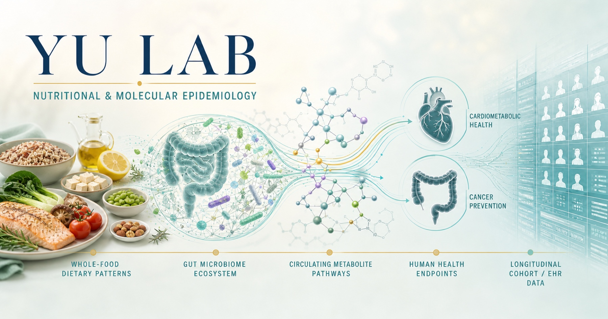
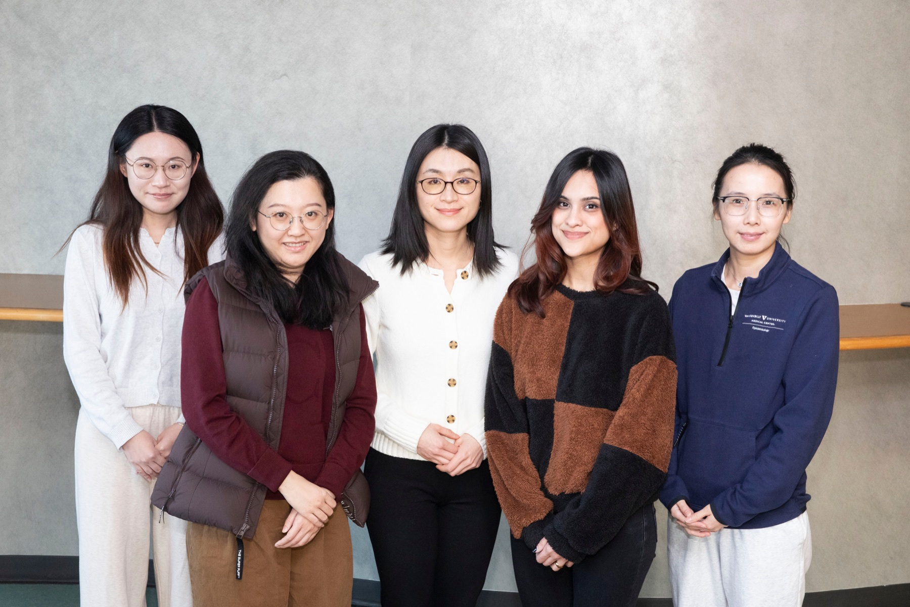
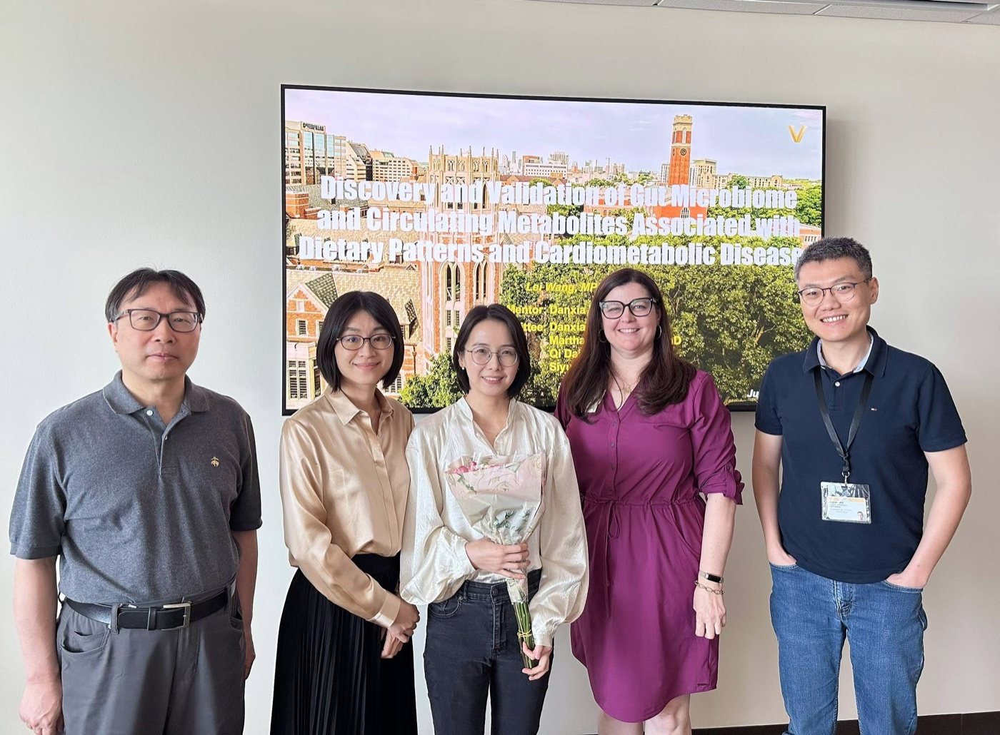
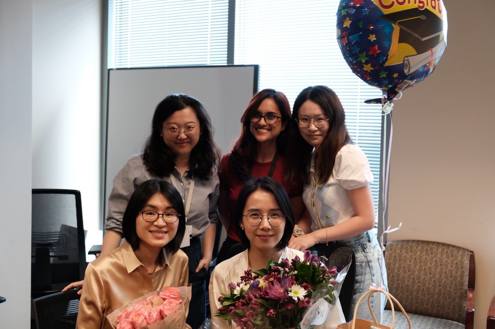

The Gut Microbiota in Metabolic Surgery
A multi-ethnic, multi-omic longitudinal study of microbiome and microbial-metabolite changes before and after metabolic surgery, including predictors of cardiometabolic improvement.

We leverage large-scale prospective cohorts, longitudinal electronic health records, multi-omics (metagenomics, metabolomics, proteomics), and translational models to uncover modifiable risk factors, biomarkers, and molecular pathways underlying cardiometabolic diseases and cancer risk.
Our mission is to translate these nutritional and molecular epidemiology insights into precision prevention and clinical care for diverse populations.

A multi-ethnic, multi-omic longitudinal study of microbiome and microbial-metabolite changes before and after metabolic surgery, including predictors of cardiometabolic improvement.
Evaluating post-surgery microbiota, microbial metabolites, and immune proteins, with translational studies of colorectal cancer mechanisms.
Investigating the gut microbiota in the context of emerging pharmacologic treatments for obesity.
A prospective metabolomic study of peanut consumption, circulating metabolites, and incident coronary heart disease.
Wang L, Yang J, Chen J, Rebholz CM, Shu XO, Shrubsole MJ, Gupta DK, Lipworth L, Ma S, Dai Q, Zheng W, Yu D. Clinical Nutrition. PMID: 42217336.
Zheng Y, Yang JJ, Gupta DK, Herrington DM, Yu B, Nguyen NQH, Pinto R, Tzoulaki I, Cai H, Cai Q, Lipworth L, Shu XO, Zheng W, Yu D. PLOS Medicine. PMID: 41843497.
Wang Z, Wang L, Zhang X, Lowery BD, Shaffer LL, Chen Y, Wells QS, Flynn CR, Williams B, Spann M, Srivastava G, Samuels JM, Yu D. JAMA Network Open. PMID: 41511769.
Zheng Y, Guo Z, Jeong E, Xu S, Samuels JM, Dawwas GK, Tao R, Srivastava G, Chen Y, Yu D. Diabetes Research and Clinical Practice. PMID: 41349614.
Deng K, Wang L, Nguyen SM, Shrubsole MJ, Cai Q, Lipworth L, Gupta DK, Zheng W, Shu XO, Yu D. eBioMedicine. PMID: 40188743.
Wang L, Zhang X, Chen Y, Flynn CR, English WJ, Samuels JM, Williams B, Spann M, Albaugh VL, Shu XO, Yu D. Journal of the American Heart Association. PMID: 40055867.
Liu L, Nguyen SM, Wang L, Shi J, Long J, Cai Q, Shrubsole MJ, Shu XO, Zheng W, Yu D. American Journal of Clinical Nutrition. PMID: 39537028.
Deng K, Gupta DK, Shu XO, Lipworth L, Zheng W, Cai H, Cai Q, Yu D. Circulation: Genomic and Precision Medicine. PMID: 38950084.
Deng K, Xu M, Sahinoz M, Cai Q, Shrubsole MJ, Lipworth L, Gupta DK, Dixon DD, Zheng W, Shah R, Yu D. BMC Medicine. PMID: 38886716.
Deng K, Pan XF, Voehler MW, Cai Q, Cai H, Shu XO, Gupta DK, Lipworth L, Zheng W, Yu D. Journal of the American Heart Association. PMID: 38726919.
PhD Student in Epidemiology · 2024–present
Postdoctoral Research Fellow · 2025–present
Former PhD trainee · 2021–2025
Clinical Research Coordinator · 2025–present


For research collaborations, speaking invitations, and questions about the lab, please contact Danxia Yu.
Associate Professor of Medicine